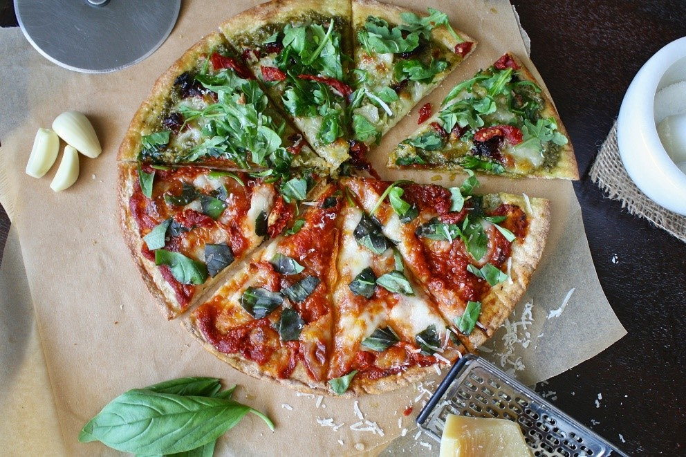
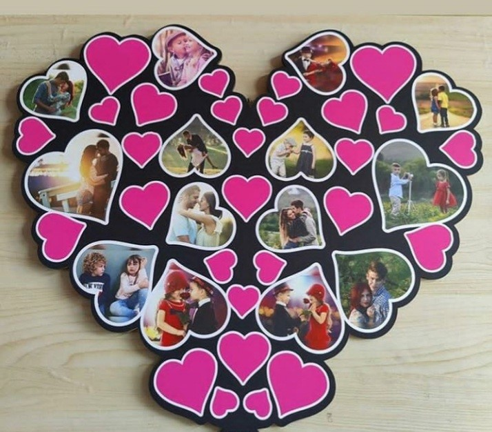
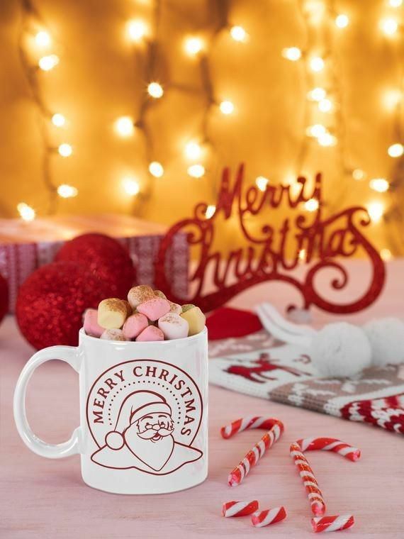
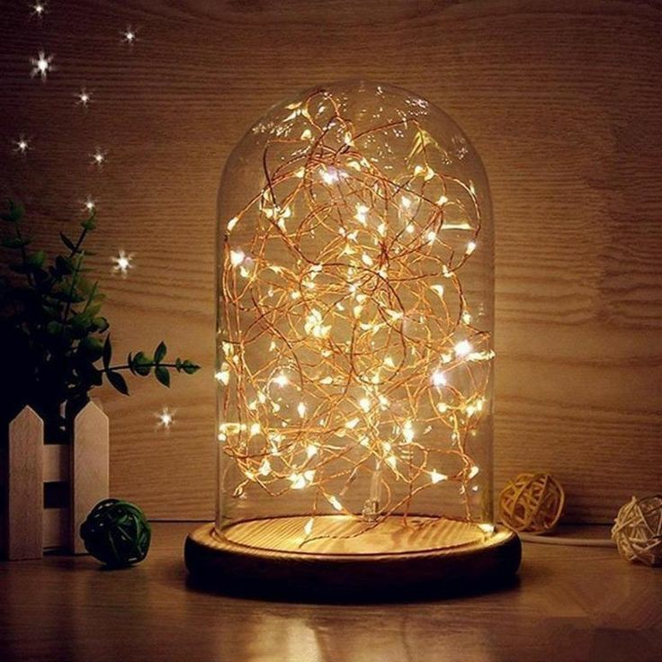

WoodGreek
LET THE WOOD SPEAK FOR YOUR ATTITUDE
WISHING YOU A VERY WARM HAPPY NEW 2021
FUN WAYS TO WELCOME 2021:
THE QUARANTINE EDITION
This year deserved a big fat goodbye, owing to all the menace it caused. But 2020 doesn't seem to be a great fan of parties, so what now? Well, let's hit the couch and throw an unforgettable party at home and bring in a brand New Year.
2020 was pretty much like the Monday blues that faded away as soon as it crept in. Honestly, deep down we all are going to miss the year that everyone wants to forget.
The late night sessions of dalgona coffee, the hysterical laughter after defeating your friends in a game of ludo, or the monotonous 'Am I audible' meetings made the year a memorable one.
pandemic definitely turned out to be harsh on all of us in different possible ways, but it also reminded us of the beautiful things in life that we sometimes leave behind, starting from spending time with our families and our own self.
And now it is time to bid goodbye to this rollercoaster of a year i.e. 2020. Even though the past year has been challenging for us, one should not go overboard with the New Year celebrations this year.
Hence, we have some freshly-baked ideas to spice up your celebration of the year:-
1. DRESS UP FOR A NIGHT IN
The fact that you are home for New Year's Eve should not stop you from adding
a little glam to your house party. Get dolled up and dress up the way you like.
Buy an outfit of your choice, set your hair, put on your favourite pair of
footwear and you're ready to bring in the New Year.
2. MOVIE MARATHON
Just sit back with a bucket of popcorn and binge watch all your favourite
movies and series. You can always go for a cliched holiday or chick- flick movie.
No one's judging!
3. MAKE YOURSELF A LAVISH MEAL/ORDER FOOD

Treat yourself for avoiding the crowds and tempting parties, by cooking a
lavish dinner for you and your family. If you're not a fan of culinary you
can always order food from your favourite restaurant or go for a pizza.
4. HAVE A SMALL FAMILY GET TOGETHER
Jog down memory lane by simply spending time with your family and gift them a perfect holiday gift. And what better than personalized photo frames or family collages. You can choose trendy gifts for your loved ones from Wood Greek's collection of customized photo frames and photo collages.
Visit us : woodgreek
5. SLEEP IN
If you're not a fan of parties and celebrations you can always snuggle
inside your cozy blanket and sleep on New Year's Eve.
6. PLAN A VACATION FOR THE NEXT YEAR
Look forward towards the upcoming year and start making your travel plans
which were disrupted by this year. The last day of the year is indeed the
best time to make plans for the next year.
7. WATCH THE BALL DROP
On 31 December every year, a giant, glowing ball is lowered down from the top
of the Times Square building in New York City at 11.59pm.
Due to the pandemic it can be witnessed virtually via streaming on
TimesSquareBall and TimesSquareNYC starting at 6 p.m.
8. END IT WITH A RESOLUTION
No New Year party is complete without our firm and dedicated resolutions for the next year, which might not last that long. So don't forget to make a resolution before the clock strucks 12 and try to complete it for as long as you can!
I hope these ideas help you bring in a fun and memorable time!
ONCE AGAIN WOOD GREEK WISHES YOU ALL A VERY HAPPY NEW YEAR!
In case if you've missed our Christmas products
PERSONALIZED PHOTO FRAMES
 There is something so special in wrapping up life's memories and gifting them to your loved ones. Specially in these times, when families are far away.
SCENTED CANDLES
Give a kick-start to the holidays by gifting the perfect scented candles to your loved ones. A good scented candle can conjure feelings of warmth, comfort, and a lot of Christmas cheer.
CHRISTMAS HAMPERS
Surprise your loved ones with an exciting Christmas hamper loaded with their favourite goodies and items.
COFFEE MUGS
 It's officially the season of hot chocolates, coffee and comforting teas. A coffee mug would be the ideal gift for someone who loves to sip away the cold winter in a mug full of piping hot drinks.
LAMPS AND LIGHTS
 Lighten up the homes of your loved ones, this Christmas by gifting them an illuminating lamp. You can always keep an option of gifting fairy lights to you friends to decorate their tree and rooms this holiday season.